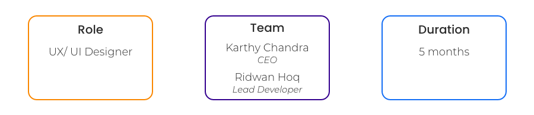
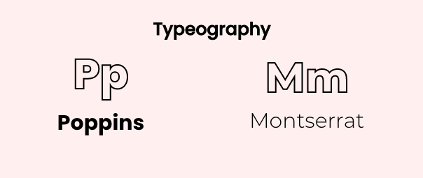
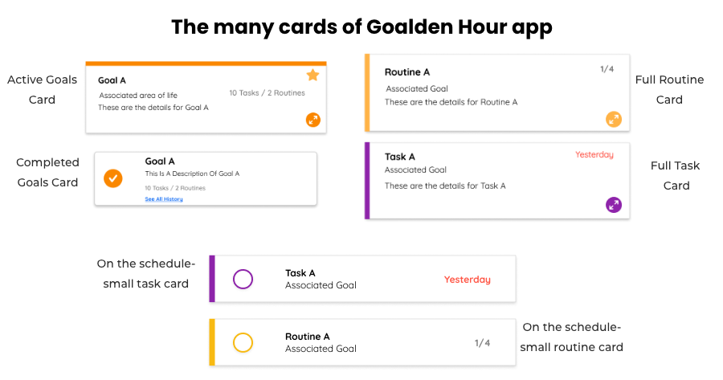
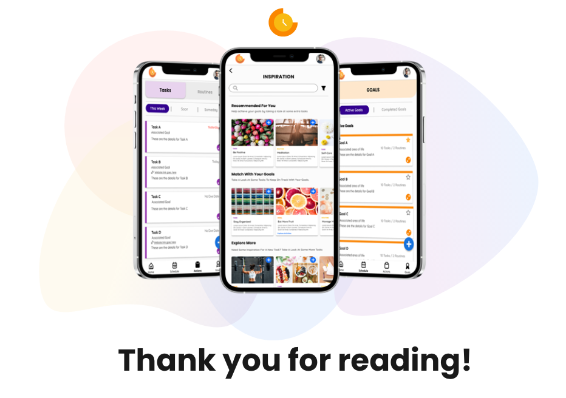

Goalden Hour Case Study
Goalden hour is a goal-driven productivity tool that helps combine scheduling, task management and
self-improvement
so that people can bring their goals & good habits to the forefront of their planning process.
Goalden hour helps to manage the important things in peoples lives by making it in one place.
How I got started at goalden hour:
I joined goalden hour as their sole designer when Goalden hour was just a team made up of the CEO, head of development and two other developers. I lead the UX/UI design exploration and the creation of their Alpha version of the Goalden Hour app. My goal from the beginning of joining Goalden hour was to create a mobile-first design that was going to be effective for the targeted user (college students), quick for the development team to build, cost-effective and married the design of productivity applications with mindfulness apps.
The Challenge:
The main challenge (and the reason I was brought on) was that Goalden hour was trying to build an app version of their
MVP product for their targeted market. But creating a mobile version of their website based product was causing issues
in the UX architecture and overall flow blending the productivity side of Goalden hour, without overwhelming the
mindfulness aspect.
With this challenge in mind, we believe that re-designing the MPV and creating a mobile-first product was the best
route. Though this late presented challenges in redesigning the flow and more requirements for the overall product, It
also allowed me creative freedom for the UI and allowed us (as a team) to define our most important elements for our
users when using this app.
Current Application Analysis:
When I first joined goalden hour they had designed a small version of the app in which matched the architecture of the
working website. I began to work off these designs and quickly ran into some UX problems. The app felt disjointed and
the UI design reminded me of an older version of google calendar.
One of the biggest problems we were originally having was to distinguish from the “schedule” page to the tasks/routines
pages. The old design had tried to put them all on one screen in a tabular view, but this started to get a bit
complicated as each tab acted and looked differently.
Eventually, all these small pain points began to affect the overall architecture of the app and I decided to take a step
back and see if there was an overall better way.
Turns out there was and we design to scrap this design and build from the ground up.
Business needs:
Goalden hours biggest goal from this redesign was to create a product that better fits their overall targeted market: the
college student. After some market research, the goalden hour team discovered that mobile apps were a better fit for this
demographic which in turn led to our overhaul of the product.
The problem with a redesign of a full product is that it takes alot of time and money, two things a small start-up lacks
in their resources.
The biggest constraint as the sole designer on this product was working with the development team to manage the time and
effort building of our components was going to take on the development side, without taking away from the usability and
overall visual appeal of goalden hour.
User needs:
Though Goalden hour was building a new app for their users, there were still some important needs that had to be met
when recreating this product.
The first need recognized was the ease of use within the product. Like most productivity apps, Goalden hour needed to
capitalize on the quickness of creating a daily task for a user while still making sure that the user was reminded that
the app was used for bigger goals than just the day-to-day tasks.
This being said there was two very different user flows that needed to take place within this app, yet I had to make
sure the create the ease of a daily task without clogging up the user flow with users goals, making the app slow or too
complicated for the fast-paced user.
Creating a Brand Identity:
After deciding to do a full redesign I wanted to step away from the “google” theme the app originally had and evaluate
where Goalden hour stood as a brand.
Productivity and mindfulness are in a way two very opposing ideas. On one hand, productivity has come aligned with the
visuals of a very plain, low UI looking app, focused on making sure that the task you are creating is the focus. There
is a lot of white space, bright, colour-coordinated tabs and plain icons. But when we look at the mindfulness app market
we are flooded with calm colours, animations, pixel drawings and not a ton of white space.
Trying to align Goalden hours brand to straddle the two worlds was a tough line to cross.
The important ideas we took from both worlds was on the productivity side, the ability to focus on one card task without
much noise on the app’s visuals. Yet on the mindfulness app side taking some of the fun blends of colours and drawings
to create a less uptight feel to the app.
The biggest focus on our brand design was to allow a goalden hour to live in both worlds without clashing with each
other. The readability on the side and the serenity of the other play with goalden hours colours and typography.
Colors:
Goalden Hour is a play of words for sunset and sunrise, we wanted to make sure to incorporate that into our colour pallet while still allowing some other colours to help with the readability of the app.

typography:
We wanted our typography to also tell a story of the blending of the two worlds Goalden hour was in. We chose our two fonts because they were easy to read with lots of option for a play on hierarchy in the font-weight but were so still that the app felt un-playful with its cards.
One of our challenges was to ensure that the design was simple enough for the developers to create components quickly, without losing the UX of the app. When looking at where we could cut in out development time we decided to use a UI component library that matched out development language (react). We went with Eva design as we felt that this component library had enough of our main components yet, still allowed for quick customization of components when needed for the UX architecture.
Cards on your schedule vs. full card
One of the first high severities pain points we found was that the card on the schedule should be filled with the important information, but on the task and routines pages, users wanted to access more information. For us, it was important to make sure these cards look differently but weren’t completely disjointed from each other. Separating these cards in design also helped to convey the idea that we wanted the user to focus on the main task/routine while on their schedule and not get bogged down with details. Yet, if they wanted to see more they had the option of looking at a bigger card filled with the details they put in.
Adding To Your Schedule:
When adding a task or routine to your schedule I wanted to make sure that this flow would be quick and easy for a user. Once you click on the plus button on the schedule screen (1st click) a drawer would overlay the schedule and the use would be able to choose tasks and/ or routines from their list (2nd click). In my design, I wanted to mimic the task and routine screen in the app as I wanted to reuse the design for the developers, but as well to not confuse the users with another different card. The user can choose as many cards from both tasks and routines as to put into their schedule. Once complete they would click (3rd click) the add to schedule button where the schedule screen would then populate with their choices. This method allows the users to never have to leave the schedule screen as well, allows minimal clicks for the schedule population.
Staring Your Goals:
A method Goalden hour likes to promote as part of their achieve your goals aspect is to help the user focus on completing their goals by erasing the noise and focusing on a few goals at a time. We wanted to add that process to the app by allowing users to “star” their goals and bring them to the top of the screen. This aspect is important in helping a user to not feel overwhelmed with their goals but also helps goalden hour with making sure users don’t get frustrated.
Skipping a Task/Routine:
An aspect Goalden hour wanted to emphasize is the idea of completing your daily task/routines that the user puts on their schedule, but also teaching a user how to moderate what they can complete in a day. A way we wanted to showcase this tacit was to not allow a user to delete a task or routine off of their daily schedule but instead having them “skip” the item. Once the item is skipped it will turn opaque and go to the bottom of the schedule list. By keeping an item on the list we wanted to be able to show the user what they can accomplish in a day and have them learn from it. The item will then return to the main tasks/routines list without punishing the user for “skipping”.
Inspiration page:
Another pain point we found among users was the confusion of what a goal should look like and how one defines a goal. While we do have prompts on our “making a goal card” we also wanted to give users the direction to what might constitute a goal. The inspiration page was created to help guide a user to add goals to their list that are already pre-defined. We also add tasks and routines that pair with an overarching goal a user can add. The inspiration page not only helps new users but also allows returning users so direction if they feel their own goals are stale. Lastly, a selling point of having a pre-made inspiration is to eventually be able to pair with other companies that can help get a user to that pre-made goal and help Goalden hour to earn revenue.
Outcome:
At the moment Goalden hour is still in the development process. These designs have been used to help attract investors and an overall roadmap for our development team. We are also working on a product for college counsellors that will pair with this app to help students stay on track with their goals. My final take away has been that working at a start-up as the sole UX/UI designer I have to wear many hats. Some of the glorious hats I wore was: designer, user advocate, product manager and part-time developer. I have been very fortunate to be a part of this journey and have grown tremendously from my time with Goalden Hour. I am excited to see how this product can enrich more lives.
Like What You See?
Let's work together!